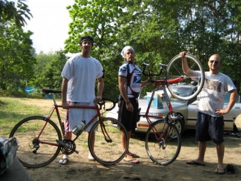

I am starting to finalize the plans for the trip to Latin America (aka escape the snow), as well as saving money for the trip through odd-jobs while not relegating myself to wearing a collared shirt or suit. great success!Since I left you all last, I finished my work at a global food banking consulting firm and was able to get some real self-fulfilling work done. I have connected officials from the country of Bulgaria to their American counterparts in hopes that in the next year or so, a food banking system will arise in Bulgaria. I think if I ever go to Bulgaria, I might get elected Mayor of a podunk town somewhere and live the rest of my days there. Picture Mayor Quimby from the Simpsons in Bulgaria, that’d be me. Speaking of the Simpsons—if you haven’t seen the movie yet, do it. It will make you appreciate the true genius that is the Simpsons, and put those other shows (Family Guy, Futurama) to shame.Other business before I go into a bit of details about the planned trip…I saw Mike Abdenour walking down Michigan Avenue. he was wearing red overalls and throwing goombas.Last week my buddy maze and I rode our bikes from Chicago, Illinois to South Haven, Michigan. Total mileage was around 160 or so and we completed it in 2 days. If you’ve never gotten on a bicycle and done a trip of any length, you’re missing out on a truely genuine way of seeing the United States. Every place we went, friendly people were questioning as to where we were coming from, where we were going, it’s like soon as you leave Chicago you are in a world of Flanderess (i dont know how to make a plural of Ned Flanders). If you are not a Simpsons fan, you might not understand most of this blog, and you might also be boring.The fireman was our support car as needed our bike gear and tent for camping on the first night. Next summer/fall I’d like to pedal from New York City to Seatle, Washington. If you know me, it will happen. Here’s a picture of me and maze and the fireman with the support car. Although this car is not in the best shape, I will be the first to admit. Soooo, we might need a support car for the support car if anyone is interested.Speaking of friendly people, I moved to Chicago right from Maui, Hawaii where people express the ‘Aloha’ spirit. In Chicago, not that much. People in cities are generally more abrasive, rude, and just downright unfriendly. Riding a bicycle in the city as my mode of transportation, it gives you first-hand experience of this anti-altruistic attitude. I’ve come to despise cabs and generally anyone who drives within the city to a place they could walk, or ride, for that matter. Since I’ve told the story quite a few times, I’ll post it on here so everyone can learn a valuable lesson.Two weeks ago I was riding with a buddy downtown, we were moving at a good clip in an attempt to make it to Lollopolooza to see a few bands. My friend, a more-than-capable rider was on my right as went over a cut-out in the pavement. Normally a very simple manuever, however, seconds later, it would turn into a very complicated day. The front wheel of my friend’s beautiful Raleigh cranked off on the pavement and his fork went straight down sending him face-first into the hot concrete. Swingin around and pulling up to my unconcious friend, all i could see was blood and his front wheel frickin cruising down Orleans Avenue. Apparently the wheel REALLY wanted to see the Roots.I kneeled down next to my buddy and he had what doctors would later call “an episode of seizures.” Violently shaking and thrashing on the road, BPA hasn’t been that scared ever since that “impromptu meeting” with Chris Hansen, heh, heh, (kidding). and to my amazement people just kept on driving past us. I’d like to think they wanted to stop, but I guess they had someplace they all had to be. Everyone in the world has someplace to be it seems, even when the welfare of our fellow human beings is at stake. The point is—city life makes people desensitized and if you spend too much time in these rough cities, you too will become oblivious to human suffering going around you. We walk by homeless people with out a second thought. Somewhere along the line this behavior became acceptable. Well, I’ll tell you where it’s not acceptable, St. Joe’s, Michigan, Niles, Michigan, Portage, Indiana, and every other small-town in America.One guy did stop, although he claimed it was because my friend’s bike tire blew a stop sign a half block down, and wanted to lecture us. (that’s a sarcastic joke) One woman did stop and stated she was a cardialogist at a local hospital. We held my friend’s body still while he had the seizures and she reassured him everything would be fine once he regained conciousness. She stayed with us until the ambulance came and made sure the paramedics knew what had happened. She then stood up with my friend’s blood on her hands, wiped them off on a napkin, and got back in her car and drove away. Couldn’t even get to thank her, she didn’t do it for the self-fulfillment, she did it because it was in her human nature. Now all that shit I talk about city folk and here’s a diamond in the rough.So for every 20 cars that drove by, one stopped. I like to think the people I associate with and call my ‘friends’ would be that one as well, and i’d hope that all of you feel the same way. So let’s change this world, let’s not let it become commonplace to ignore our fellow brothers and sisters. whether its the biker unconcious on Orleans Avenue or the African child in a displacement camp, show compassion. one day, you might be that soul in dire need of help and let me tell you, it hurts more and more as each of those 19 cars drive by…let’s all make sure we’d be that one diamond in the rough.My friend has recovered after minor brain bleeding and is riding again…with a helmet. I hate to get philosophical again, but you know it makes it way into nearly every post.So the first week or so of November, I will be moving to Santo Domingo, in the Dominican Republic for several development projects. A few of the projects will focus on bringing water purification systems to various villages in the mountains of the D.R. Another project will help Dominican women sell home-made purses to stores through out the United States. I will post a map with a route of my trip as well in the next week. the computer is saying it won’t let me “because of security reasons” whatever the hell that means. is BPA a security risk? guess so, i kind of thought i was harmless.So my friends, I will update again within a few weeks with a new map and hopefully more details on my work in the D.R.A few books you all should check out that I am reading/have read…”The Immortal Class” Travis Culley—A non-fiction piece about bike messengers in Chicago.”The End of Poverty” Jefferey Sachs”Fortune at the Bottom of the Pyramid” CK PrahaladMay you all have a peaceful week and an altruistic future…From the couches of my comrades in this intimidating urban jungle,Backpacker Acker

|
You are using an insecure version of your web browser. Please update your browser!
Using an outdated browser makes your computer unsafe. For a safer, faster, more enjoyable user experience, please update your browser today or try a newer browser.
|
{kind=link}
{kind=link}
{kind=link}
Thank you, BPA. Now I no longer have to go to both your site and Ann Coulters’, as you have seemlessly intertwined the wonders of your seemingly mundane travels with your scathing opinions of Chicagoland’s emotional port-o-john that is its social structure. Thanks again!
Every time I come to this site, I want to work in a homeless kitchen, drop coin in a street beggers styrofoam cup, and rip open my shirt and scream…”can’t we all just get along!!”.
BPA–you rock.
hi, Do something to help those hungry people from Africa or India,
I created this blog about that subject:
in http://tinyurl.com/5t2jg6